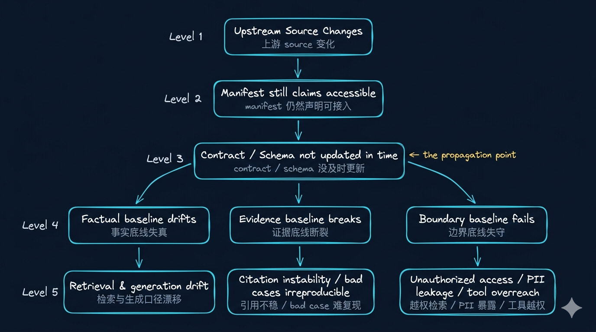

Week02｜课时1｜为什么输入问题会先于模型问题摧毁系统
为什么输入问题会先于模型问题摧毁系统
这节课不是“数据清洗技巧课”，而是 Week02 的第一道判断题。
如果你默认把 AI 质量问题都理解成模型问题，后面的资产盘点、最小元数据、PII 分级、Data Contract 和 Manifest 都会被误解成附属治理动作。
这节课先把一个生产级判断立住：
企业 AI 系统最危险的状态，不是彻底报错，而是系统看起来还能跑，但已经开始稳定地产生错误事实、错误引用或错误动作。
这节课解决什么问题
很多团队一做 AI 项目，就会把注意力几乎全部放在模型、Prompt、Embedding、Reranker 上。
这些当然重要。
但如果你真的进入企业场景，很快就会遇到一个更棘手、也更常见的问题：
模型没换、Prompt 没大改、服务还在跑，但回答开始慢慢变歪。
这时，真正先坏掉的，往往不是模型，而是输入。
可能是：
- 上游工单状态枚举悄悄变了
- 文档重新入库后丢了定位字段
- 音频转写进来了，但缺少
speaker_role或脱敏状态 - 一段本该受限的内容，在输入阶段就越过了权限边界
所以这节课先解决一个生产级判断：
AI 系统最危险的状态，不是彻底报错，而是看起来还能跑，但已经开始稳定地产生错误事实、错误引用或错误动作。
参考学习时间（50–65 分钟）
如果你只阅读正文，大约需要 35–40 分钟；如果你跟着 OmniSupport Copilot 项目一起跑一遍本课实践，并顺手看完 contract / manifest / tests，建议预留 50–65 分钟。
学完这节课你应该能做到什么
完成这节课后，你应该能做到：
- 解释为什么生产里的 AI 失真经常首先是输入问题，而不是模型问题。
- 用 事实底线 / 证据底线 / 边界底线 这三条线描述输入风险，而不是笼统地说“数据质量不好”。
- 说清楚输入问题如何一路穿透到检索、生成、工具和审计层。
- 在 OmniSupport Copilot 仓库里找到 Week02 第一批工程入口：
contracts/data/*.json、data/seed_manifests/*.json、tests/contract/。 - 实际跑过一次最小入口验证，确认 contract、manifest 和 test 在项目里已经接上。
本课产出
完成这一讲后，你至少应该得到这 4 个结果：
- 你能用“事实底线 / 证据底线 / 边界底线”解释输入问题，而不是笼统地说“数据质量不好”。
- 你知道 OmniSupport Copilot 当前项目里，输入确定性相关的第一批工程入口在哪里。
- 你已经跑过一轮最小入口验证，看到 contract test 与 manifest-driven ingest 是怎么接起来的。
- 你已经能说清：如果系统“看起来还能跑但开始变歪”，你该先从哪一层查起。
先看一张总图

这张图想表达的不是“链路很长”，而是：
如果输入侧没有被工程化，后面的每一层都只能在错误基础上继续加工。
Demo 思维 vs 生产思维
Demo 里最显眼的是模型问题，生产里最隐蔽的是输入问题。
| 维度 | Demo 思维 | 生产思维 |
|---|---|---|
| 最先看到的问题 | 回答不够聪明、格式不够稳 | 今天能答、明天变歪，但系统还在跑 |
| 团队最先修什么 | Prompt、模型、reranker | 输入事实、元数据、权限、边界 |
| 最容易忽略什么 | 上游 schema / metadata / PII 漂移 | 证据链与运行时 gate |
| 真正先该修什么 | 常常被忽略 | 输入控制面 |
先建立一个生产级判断
生产环境里最危险的状态，不是系统挂了，而是系统还在跑，并且高自信地错。
这也是为什么 Week02 不是“治理补丁周”，而是整门课的数据入口控制面。
为什么静默失败比显式报错更危险
| 状态 | 团队感知 | 实际风险 |
|---|---|---|
| 显式报错 | 很快被发现 | 影响明显但可定位 |
| 静默失败 | 以为系统没问题 | KPI、引用、动作持续漂移 |
把输入风险收成三条底线
如果你把输入问题都混成“数据质量不好”，后面会很难落地。
更稳的方式，是先把它们收成三条底线。
| 风险线 | 守的底线 | 常见表现 | 对下游的直接伤害 | Week02 对应动作 |
|---|---|---|---|---|
| 结构化风险 | 事实底线 | 字段、主键、状态枚举、时间口径、增量窗口漂移 | 指标失真、工具动作判断偏差 | 资产盘点、schema contract、兼容性判断 |
| 非结构化风险 | 证据底线 | doc_version、page_no、section_path、时间戳、说话人角色缺失 |
检索命中但引用不稳，bad case 难复现 | metadata 规范、provenance、citation 回指 |
| 合规风险 | 边界底线 | PII 未分级、租户边界不清、脱敏状态缺失、角色声明不清 | 越权检索、敏感泄露、工具越权 | PII 规则、access policy、gate / quarantine |
你可以把它们记成一句话：
- 事实底线：它说的是不是真的
- 证据底线：我能不能证明它来自哪里
- 边界底线：谁能看、谁能搜、谁能据此行动
三条底线分别会带来什么成本
| 底线失守 | 最先受伤的层 | 业务后果 |
|---|---|---|
| 事实底线 | 检索 / 指标 / 路由 | 回答变歪、统计失真 |
| 证据底线 | citation / tracing / audit | 无法复盘、无法说服业务 |
| 边界底线 | 权限 / PII / tool | 越权、泄露、违规动作 |
一个 AI 支持系统最常见的三种静默失败
1. 工单状态枚举悄悄变了，但系统还在“正常回答”
ticket.status 从 pending 改成 in_progress，如果 contract 没跟上，系统不会立刻挂掉；它只是会开始把 KPI、分流逻辑和工具动作一起带偏。
2. 文档正文还在，但证据字段没了
文档 chunk 还能被召回，但如果没有 doc_version / page_no / section_path / bbox，回答虽然像对的，引用却不稳，审计也无从下手。
3. 音频和视频内容能读，但边界已经失守
speaker_role、pii_redaction_flag、frame_ts 这些字段看起来像“补充字段”，但一旦缺失，系统就会失去脱敏、追责、证据定位和权限控制能力。
为什么很多团队会先修错地方
因为输出最显眼，输入最隐蔽。
当你看到回答不稳时，很容易先做这些动作：
- 换更强模型
- 改 Prompt
- 提高 top-k
- 换 embedding
- 增加 reranker
- 给 agent 更多自主性
这些都可能有帮助，但它们经常只是在修症状，而不是修根因。
| 你先看到的现象 | 团队最常见的第一反应 | 更可能的根因 |
|---|---|---|
| 工单相关答案忽高忽低 | 调 Prompt / 换模型 | 状态枚举、时间语义或增量窗口漂移 |
| 文档召回了，但引用不稳 | 调 top-k / 调 rerank | metadata 与定位字段不足 |
| 某些用户能查到不该看到的内容 | 加一道输出审查 | 输入阶段 access / PII 边界没有前置 |
| Tool 动作看似合理但结果经常错 | 增加 agent 推理链条 | 输入事实和工具边界没有被契约化 |
事故拆解 A：工单枚举漂移如何一步步传到工具动作
以 Northstar Workspace 的工单流为例：
- 上游支持系统把
pending改成in_progress - API 仍然能返回数据，JSON 结构也没坏
- 老 contract 没更新，测试没有及时覆盖到新枚举
- RAG 层开始把一部分工单理解成“未开始处理”
- Tool route 误判状态，开始把本来不该升级的工单送给人工
| 阶段 | 系统表面上看到什么 | 实际发生了什么 |
|---|---|---|
| 上游变更 | 字段名没变 | 语义已经漂移 |
| contract 未更新 | schema 仍然合法 | 运行时意义变了 |
| 检索 / 生成 | 还能正常答 | 事实开始偏 |
| 工具动作 | 路由看似有理 | 动作依据已经错了 |
这类问题危险就危险在：系统不是立刻红灯，而是开始稳定地产生“看起来差不多”的错。
事故拆解 B：文档定位元数据缺失为什么会摧毁证据链
再看 Northstar Edge Gateway 的产品手册。
假设解析管线仍然能产出 chunk，但：
page_no丢了section_path丢了bbox没保留
这会导致什么？
- 文本依然可以被向量化和召回
- 模型依然可能答出“差不多正确”的内容
- 但你已经无法证明这句话来自哪一页、哪一段、哪张图
| 输入状态 | 回答能力 | 引用能力 | 审计能力 |
|---|---|---|---|
| 只有正文 | 可能还能答 | 很差 | 很差 |
正文 + page_no |
基本可引用 | 较稳 | 较稳 |
再加 section_path + bbox + doc_version |
可回指、可比对 | 稳 | 稳 |
这就是为什么证据字段不是“锦上添花”，而是后面 Week07 证据链、Week08 引用和 Week14 治理的基础设施。
一个实战判断：先修 prompt 还是先修输入
| 现象 | 先查哪里 |
|---|---|
| 只有少数问法出错 | 先看 prompt / retrieval |
| 相同问题一周前正常、今天开始系统性偏 | 先查输入 |
| citation 开始失效 | 先查 metadata / provenance |
| tool 参数开始越界 | 先查 policy / contract |
行业新信号｜为什么这件事现在更重要了
- 结构化接口与 JSON Schema 在生产系统里越来越重要，因为系统边界正在变成可验证接口。
- 多模态系统越来越强调 provenance、citation 和可回指，而不是只看“能不能召回正文”。
- 输入问题如果不前置，后面的 agent、tool、audit 都会被动补锅。
为什么今天的行业实践都在强化输入控制面
这不是课程自创术语，而是今天企业 AI 工程的主流方向。
| 方向 | 你该记住什么 |
|---|---|
| Anthropic agent 实践 | 强调 simple, composable patterns，不鼓励一开始就堆复杂 agent 黑盒 |
| OpenAI Structured Outputs / tools | 把 schema、contract、tool boundary 放到运行时接口中心位置 |
| Azure multimodal search | 强调 metadata、filter、annotation、保序和可回指 |
| NIST AI RMF | 强调风险管理前置，而不是上线后补救 |
这些信号都说明同一件事：
系统越要可靠，越不能把输入当成“先喂进去再说”的黑盒。
输入问题如何穿透到 RAG、Tool、Audit 三层
| 输入问题 | RAG 层怎么坏 | Tool 层怎么坏 | Audit 层怎么坏 |
|---|---|---|---|
| schema / 枚举漂移 | 召回和解释口径变偏 | 路由与动作依据失真 | 事后很难定位到底哪批数据出了问题 |
| metadata 缺失 | 命中有了但 citation 不稳 | 工具拿不到必要上下文 | 报告里无法回到原页、原段、原时间 |
| PII / access 边界缺失 | 检索越权 | 工具越权 | 合规和追责一起失效 |
这也是为什么 Week02 的顺序一定是：
- 先盘点资产
- 再定义最小元数据和 PII 规则
- 再把 Data Contract 做成工程门禁
- 最后才把 contract 和 manifest 接进 ingest
动手实践：在 OmniSupport Copilot 里找到输入控制面的第一批工程入口
这一课不要求你立刻写完四类数据契约，而是先在项目仓库里确认：
输入确定性并不是一句抽象理念，它已经体现在 contract、manifest 和 tests 这些真实工程对象里。
第 1 步：进入项目仓库根目录
如果你已经完成 Week01，可以直接在 omnisupport-copilot 仓库根目录继续。 如果还没有完成，请先按 README 启动 Week01 工程基线。
第 2 步：先看当前已经存在的四类数据契约
重点打开这几个文件：
contracts/data/ticket_contract.jsoncontracts/data/doc_asset_contract.jsoncontracts/data/audio_asset_contract.jsoncontracts/data/video_asset_contract.json
这一轮不要急着逐字段背下来。先回答三个问题：
- 这些 contract 在守什么边界？
- 哪些字段明显是在守“事实底线”？
- 哪些字段明显是在守“证据底线”或“边界底线”？
你应该观察到什么：
- 四类输入已经被建模成明确对象，而不是“后面再补规则”的 loose notes。
- contract 目录已经把输入问题压成 runtime interface，而不是课件附件。
第 3 步：再看 source manifest 的入口
重点打开：
data/seed_manifests/source_manifest_schema.jsondata/seed_manifests/manifest_workspace_helpcenter_v1.jsondata/seed_manifests/manifest_edge_gateway_pdf_v1.jsondata/seed_manifests/manifest_tickets_synthetic_v1.json
这一轮的观察重点是：
- 不同 source 的清单长什么样
- 为什么 manifest 不是“随便写个文件列表”
- 为什么到了 Week03，ingest 必须由 manifest 驱动
你应该观察到什么：
- 批次不是脚本硬编码，而是 manifest 驱动。
- source、contract、load mode 之间已经开始形成准入链。
第 4 步：运行一遍 manifest-driven ingest 的 dry-run
docker compose --profile tools --env-file infra/env/.env.local -f infra/docker-compose.yml run --rm devbox \
python -m pipelines.ingestion.seed_loader --manifest-dir data/seed_manifests你这一步不是为了理解所有实现细节，而是先建立一个判断：
Week02 的 contract 和 manifest，后面是真的会进入 pipeline 的。
你应该观察到什么：
- Week02 的终点不是“写完文档”，而是开始做 runtime admission。
- loader 读到的不是抽象概念，而是后续会被 pipeline 消费的对象。
第 5 步：运行一遍 contract tests
docker compose --profile tools --env-file infra/env/.env.local -f infra/docker-compose.yml run --rm devbox \
pytest tests/contract/ -v你应该看到什么输出
tests/contract/test_json_schemas.py被执行- 至少一轮 schema / manifest 校验通过
- 如果你故意制造 enum、metadata 或 required 字段错误，测试会失败
你应该观察到什么：
- contract test 不只是“红了还是绿了”，而是在告诉你哪一层边界开始失守。
- 如果错误先在 tests 暴露，通常说明 Week02 的门禁仍然有效，没有把问题拖到下游。
失败了先查哪 4 个点
contracts/data/*.json是否真的更新了而不是只改了蓝图data/seed_manifests/*.json是否还引用旧 contract 或旧 sourcetests/contract/fixtures/样例是否和 contract 版本对得上- 本次失败更像事实问题、证据问题还是边界问题
第 6 步：写下你的第一轮输入判断
做完上面 5 步后，至少写下这 3 句话：
- 这个项目里，输入确定性目前最先落在哪些文件和命令上。
- 如果 contract / manifest 缺失，最先出问题的会是哪一层。
- 为什么 Week02 不是“治理补丁周”，而是整门课的数据入口控制面。
把这节课和课时 2～5 真正串起来
这一讲负责立判断，后面四讲负责把判断变成工程对象：
- 课时2：把“输入有哪些东西”盘成资产地图
- 课时3：把“最小元数据和 PII”写成统一标准
- 课时4：把 contract 写成能放行、能拦截、能比较的门禁
- 课时5：把 contract 和 manifest 真正接进 ingest 入口
所以这节课不是独立的理论页，而是 Week02 的起点页。
本课最容易犯的 4 个误区
- 把输入问题等同于“数据脏一点” 实际上它经常是事实、证据、边界三条底线同时松动。
- 看到答案不稳就先调模型 这样很容易把上游错误加工得更像真的。
- 把 metadata 当备注 结果引用、过滤、权限和审计都只能后补。
- 把 contract 当文档 结果输入问题永远拖到 RAG / Tool / Audit 层才暴露。
本课最重要的 7 个判断
- 生产里更常见的是输入先坏，而不是模型先坏。
- 输入风险至少要分成事实底线、证据底线、边界底线三类。
- 只修输出层，经常是在修症状，不是在修根因。
- Manifest 不是文件清单，而是一次 ingest 的声明入口。
- Contract 不是文档说明，而是运行时门禁。
- metadata 和 PII 不是附加字段，而是后续 citation、filter、audit 的基础设施。
- Week02 做得越扎实，Week03 之后的 ingest、RAG、Agent、评测与治理越稳。
本课自检清单
课后最小行动
在进入课时 2 之前，先做这 3 件事：
- 把四类 contract 和三份 manifest 打开一遍，不求全懂，但要有地图感。
- 跑一遍
seed_loader和tests/contract/，确认 Week02 的入口不是空概念。 - 写下你当前最担心的一类输入风险：事实、证据，还是边界。
延伸阅读
- OmniSupport Copilot 项目 README
- OmniSupport Copilot
runbooks/week01-startup.md - Anthropic on building effective agents
- OpenAI Structured Outputs / tools
- Azure multimodal search
- NIST AI RMF for Generative AI